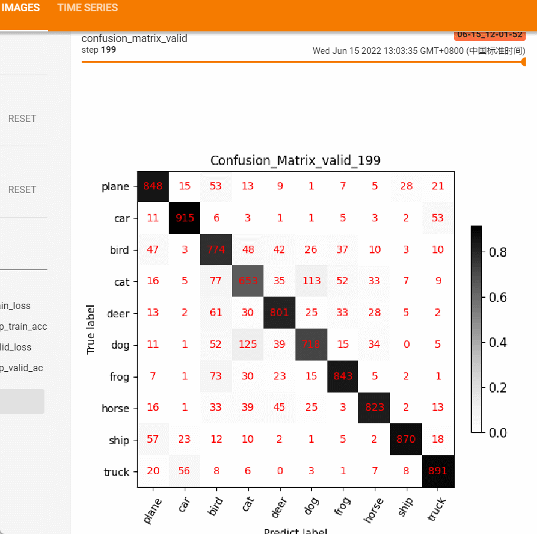
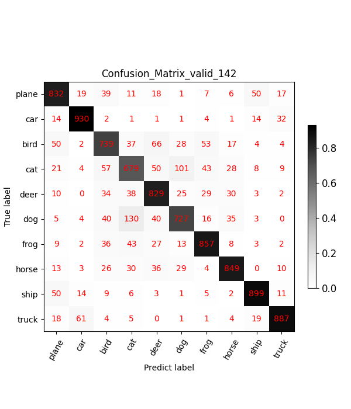

6.3 混淆矩阵与训练曲线可视化
在分类任务中，通过混淆矩阵可以看出模型的偏好，而且对每一个类别的分类情况都了如指掌，为模型的优化提供很大帮助。本节将介绍混淆矩阵概念及其可视化。
为了演示混淆矩阵与训练曲线，本节代码采用cifar10数据集进行训练，模型采用resnet系列。
数据cifar-10-python.tar.gz 可从 "https://www.cs.toronto.edu/~kriz/cifar-10-python.tar.gz" 下载，放到指定文件夹节课，无需解压，代码会自动解压。

混淆矩阵概念
混淆矩阵(Confusion Matrix)常用来观察分类结果，其是一个N*N的方阵，N表示类别数。
混淆矩阵的行表示真实类别，列表示预测类别。例如，猫狗的二分类问题，有猫的图像10张，狗的图像30张，模型对这40张图片进行预测，得到的混淆矩阵为
| 阿猫 | 阿狗 | |
|---|---|---|
| 阿猫 | 7 | 3 |
| 阿狗 | 10 | 20 |
从第一行中可知道，10张猫的图像中，7张预测为猫，3张预测为狗，猫的召回率(Recall)为7/10 = 70%，
从第二行中可知道，30张狗的图像中，8张预测为猫，22张预测为狗，狗的召回率为20/30 = 66.7%，
从第一列中可知道，预测为猫的17张图像中，有7张是真正的猫，猫的精确度(Precision)为7 / 17 = 41.17%
从第二列中可知道，预测为狗的23张图像中，有20张是真正的狗，狗的精确度(Precision)为20 / 23 = 86.96%
模型的准确率(Accuracy)为 7+20 / 40 = 67.5%
可以发现通过混淆矩阵可以清晰的看出网络模型的分类情况，若再结合上颜色可视化，可方便的看出模型的分类偏好。
本小节将介绍，混淆矩阵的统计及其可视化。
混淆矩阵的统计
混淆矩阵的绘制将借助matplotlib的imshow功能，在imshow中可对矩阵进行上色，colorbar可自行调整，如本例中采用的黑白调，也可以选择其他的colorbar。
在模型训练中，通常以一个epoch为单位，进行混淆矩阵的统计，然后绘制，代码思路如下：
第一步：创建混淆矩阵
获取类别数，创建N*N的零矩阵
conf_mat = np.zeros([cls_num, cls_num])
第二步：获取真实标签和预测标签
labels 为真实标签，通常为一个batch的标签
predicted为预测类别，与labels同长度
第三步：依据标签为混淆矩阵计数
for j in range(len(labels)):
cate_i = labels[j].cpu().numpy()
pre_i = predicted[j].cpu().numpy()
conf_mat[cate_i, pre_i] += 1.
混淆矩阵可视化
混淆矩阵可视化已经封装成一个函数show_conf_mat，函数位于 配套代码
show_conf_mat(confusion_mat, classes, set_name, out_dir, epoch=999, verbose=False, perc=False)
参数：
"""
混淆矩阵绘制并保存图片
:param confusion_mat: nd.array
:param classes: list or tuple, 类别名称
:param set_name: str, 数据集名称 train or valid or test?
:param out_dir: str, 图片要保存的文件夹
:param epoch: int, 第几个epoch
:param verbose: bool, 是否打印精度信息
:param perc: bool, 是否采用百分比，图像分割时用，因分类数目过大
:return:
"""
show_conf_mat函数内部原理就不再详细展开，都是matplotlib的基础知识。下图为最终效果图:

show_conf_mat函数提供png的保存，不便于观察整个训练过程的变化，这里借助tensorboard的add_figure功能，将每个epoch的混淆矩阵保存到tensorboard中，然后可拖拽的形式观察模型精度的变化情况。
效果如下图：
从上述变化可以发现模型在迭代过程中的偏好，前后对比图可很好的帮助工程师分析模型的偏好。
当global_step比较多的时候，toolbar无法展示每一个step，这需要在启动tensorboard的时候设置一下参数即可
tensorboard --logdir=./Result --samples_per_plugin images=200
除了手动绘制之外，sklearn库也提供了混淆矩阵绘制（from sklearn.metrics import confusion_matrix），这里不再拓展。
训练曲线绘制
除了混淆矩阵，在模型训练过程中最重要的是观察loss曲线的变化，loss曲线变化趋势直接决定训练是否需要停止，并指引我们进行参数的调整。
loss曲线是需要将训练与验证放在一起看的，单独看一条曲线是不够的，这一点需要大家了解模型评估中的方差与偏差的概念。
通过训练loss看偏差，通过训练loss与验证loss看方差。
偏差看的是模型拟合能力是否足够，方差是看模型泛化性能是否足够，是否存在过拟合。

将两条曲线绘制到一个坐标系里，可以借助tensorboard的add_scalars函数，具体请看代码
在训练集的迭代之后记录训练集的loss
writer.add_scalars('Loss_group', {'train_loss': loss_avg}, epoch)
在验证集的迭代之后记录训练集的loss
writer.add_scalars('Loss_group', {'valid_loss': loss_avg}, epoch)
在这里可以发现，SummaryWriter类的函数是以tag变量进行区分不同的坐标系，以上例子看出，虽然在两个地方执行代码，但是通过tag="Loss_group"，仍旧可以把它们绘制在一个坐标系里。
小结
以上就是在训练过程中记录必要的训练信息，用于监控模型训练状态。
下一节将介绍有趣的CAM可视化实现，以及nn.Module模块中的系列hook函数使用。